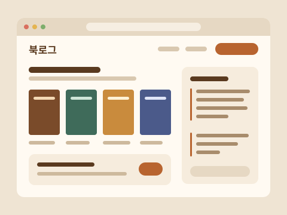

아직 없는 것: 위험 색(빨강), 로딩 버튼, 입력 폼 오류 상태. 삭제 확인은 먹 버튼(Strong)으로 해요. 필요해지면 토큰과 components/ui에 먼저 추가해요. 아이콘은 Phosphor를 굵은(bold) 두께로 써요. 검색은 MagnifyingGlass, 더보기는 DotsThree예요.
04Test Moa만의 요소
다른 서비스와 구별되는 세 가지. 가짜 스크린샷 대신 활자를 그림으로 쓰고, 교정쇄의 표식을 정해진 곳에만 둬요.
가계부 노트
활자 썸네일교정지 면 위 서비스 이름. 16:10, 구독 모집 3열은 2:1
포트폴리오 빌더
교정 도장정원이 찬 모집만. 두 줄 테두리, -12° 회전, 이름 위에 겹침
새 서비스를 먼저 써 보고
재단선 히어로네 귀퉁이 재단선 + 색 막대. 홈 배너에만
가계부 노트
활자 썸네일다크에서도 밝은 교정지 면
포트폴리오 빌더
교정 도장다크 에메랄드, 겹침 효과 없음
새 서비스를 먼저 써 보고
재단선 히어로다크는 색 막대 없이 재단선만
05채팅 요소
채팅함(/my/chats)에서 처음 쓴 요소예요. 새 색은 없고, 카드 왼쪽 이미지 칸·역할 탭·역할 배지·더보기 메뉴를 기존 면과 모서리 규칙으로 만들었어요. 예시 이미지는 frontend/public/sample/projects의 시연용 웹·앱 화면이에요. 코드는 frontend/src/features/chat/components에 있어요.
라이트
북

북로그
개발자 서재지기
피드백 마감이 이틀 남았어요. 막히는 부분 있으면 편하게 물어봐 주세요.
대화방 이름 변경대화방 삭제
가
가계부 노트
개발자 도현랩
보내 주신 분류 오류 확인했어요. 다음 버전에서 고칠게요.
다크
가
가계부 노트
테스터 새벽코더
영수증 사진이 흐리면 금액을 못 읽는 것 같아요.
북
북로그
개발자 서재지기
피드백 잘 받았어요. 참여해 주셔서 감사해요.
채팅 카드 · ChatCard패널 바탕, 모서리 16. 왼쪽 이미지 칸이 선 없이 그라데이션으로 사라지며 내용으로 이어져요. 내용은 위아래 16 · 좌우 20(md 24), 줄 사이 6, 카드 사이 16. 대화방 이름 20px 800과 최근 일시 12px · 역할 배지 + 상대 닉네임 14px 600(내 닉네임은 쓰지 않아요) · 미리보기 한 줄. 대화방 이름은 바꾼 이름이 없으면 프로젝트명. 오늘 온 대화는 일시가 강조색 + 점. hover 때 이미지 105%, 이름 강조색.
카드 이미지 · ChatThumb카드 높이를 다 채우는 칸, 폭 96(sm 128, md 160), 넓은 화면에서 약 160×115로 이미지 원본 4:3에 가까워요. 칸 오른쪽 60%에 투명 → 카드 바탕색 그라데이션을 덮어 선 없이 사라져요. 다크에서도 같은 토큰이라 검은 카드로 녹아요. 이미지는 가운데 기준으로 잘라 채우고 대체 텍스트는 비워요. 이미지가 없으면 이름 첫 글자 활자 썸네일. 지금 이미지는 시연용이에요.
더보기 메뉴 · 대화상자 · 역할 탭더보기 메뉴는 "대화방 이름 변경", 구분선, "대화방 삭제"(맨 아래) 순서예요. 첫 항목에 포커스, 화살표로 이동, Esc·Tab·바깥 클릭으로 닫혀요. 항목을 고르면 대화상자가 열리고, 취소하면 더보기 버튼으로 포커스가 돌아와요. 역할 탭(전체 / 테스터 / 개발자)은 검색창 아래 줄 왼쪽, 정렬은 오른쪽. 겹침 --z-popover 20은 카드 위, 헤더 아래예요.
강조색은 이 화면에서 네 자리에만 써요: 오늘 온 대화의 일시와 점, hover 때 프로젝트명, 고른 역할 탭의 수, 열린 더보기. 닉네임·역할 배지·이미지처럼 카드마다 반복되는 곳에는 쓰지 않아서 강조가 드물게 남아요.
06지켜야 할 규칙
이렇게 해요
색·모션 값은 globals.css 토큰으로만 써요
간격·글자 크기·모서리는 Tailwind 기본 단계를 써요
강조색은 주 버튼, 순위 숫자, 추가 보상, 도장, 새로 생긴 것(오늘 온 대화), 포커스·고른 탭에만 써요
강조는 굵기와 크기로 하고, 숫자는 tabular-nums를 써요
모집 글에는 마감일·인원·보상을 같은 자리에 보여 줘요
공통 요소는 components/ui에서 가져다 써요
이렇게 하지 않아요
컴포넌트에 hex 값이나 [13px] 같은 임의 값을 쓰지 않아요
제목 위 작은 라벨(kicker)을 달지 않아요
그라데이션 글자와 그림자를 쓰지 않아요. 흐림은 모바일 메뉴·대화상자 배경에만, 그라데이션은 채팅 카드 이미지 끝에만 써요
모집 카드에 가짜 스크린샷을, 어디에도 지어낸 후기·수치를 넣지 않아요 (채팅 카드의 시연용 프로젝트 이미지는 예외)